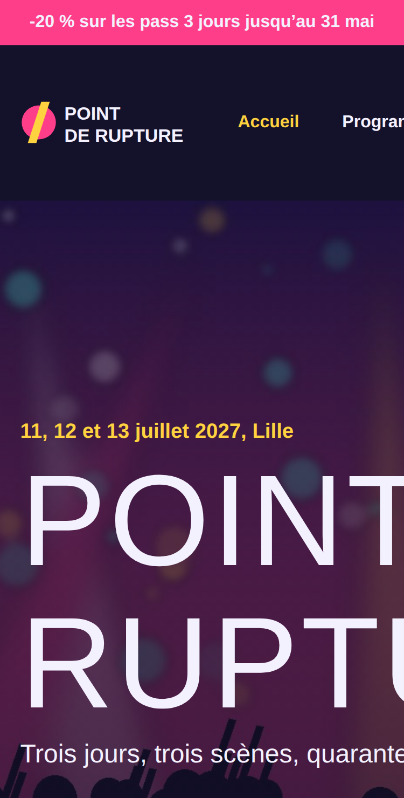
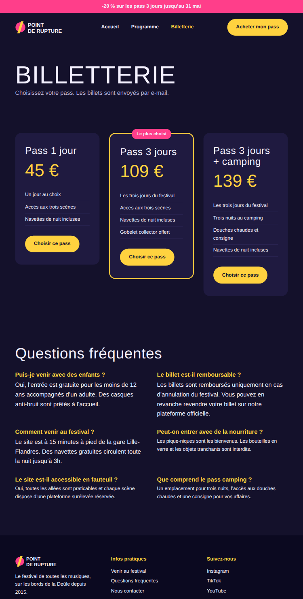
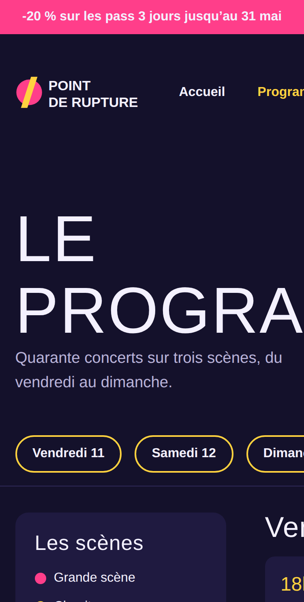

DeClaire Vasseur, directrice du festival Point de rupture
ÀAgence Bascule
ObjetSite inutilisable sur téléphone !
Bonjour,
J’ai ouvert notre nouveau site sur mon iPhone ce matin et c’est une catastrophe (captures jointes). Or 70 % de nos festivaliers achètent leur billet sur leur téléphone !
Voici tout ce que j’ai remarqué :
- sur la page d’accueil, le nom du festival sort de l’écran ;
- la billetterie est toute petite, il faut zoomer pour lire quoi que ce soit ;
- sur le programme, je dois faire glisser la page de gauche à droite ;
- sur mon grand écran de 27 pouces, le site paraît étiré, tout est collé sur les bords ;
- sur téléphone, je veux que le bouton « Acheter mon pass » soit toujours visible en bas de l’écran, comme dans les applis.
Nous présentons le site à nos partenaires vendredi. Je compte sur vous.
Claire Vasseur
PS : si ce premier lot est prêt à temps, j’ai déjà une deuxième série de demandes pour vous. Je vous l’envoie dès que celui-ci est livré.





